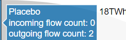
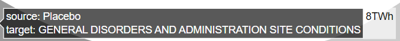
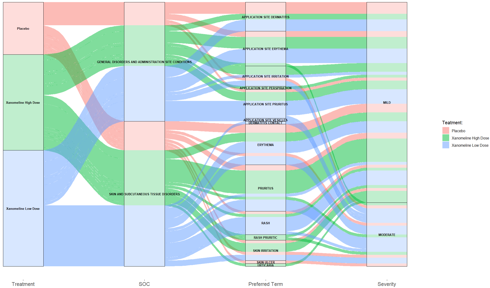

Comparative Analysis of Sankey Diagram Generation Using different R packages {netwrokD3}, {plotly}, {ggalluvial} for TEAE Data Visualization
Jagadish Katam
2025-01-20
Background/Rationale/Motivation
In the context of a Sankey chart, nodes and links are fundamental concepts that help visualize flows or relationships between categories or entities.
Nodes: Nodes are the entities or categories in your data that you want to visualize. In the context of adverse events data (ADAE dataset), nodes could represent different categories such as:
TRTA: Actual Treatment
AESOC: Adverse event system organ class
AEDECOD: Preferred term
AESEV: Adverse event severity
Links represent the flows or relationships between nodes. In a Sankey diagram, links connect two nodes and show the flow from one category to another.
When hovered over a node, the label will display the node’s category along with the number of subjects in that category (e.g.,).
Placebo18
When hovered over a link, the label will display the category of the source node and the category of the target node, followed by the number of subjects transitioning from one category to the next (e.g.,).
Placebo -> GENERAL DISORDERS AND ADMINISTRATION SITE CONDITIONS 12
Grouping Behavior and Color Assignment in LinkGroup
Note: When we set LinkGroup = “source”, the expectation is that each treatment group where the flow originates will be assigned a different color.
However, as seen in the previous slide, both “Xanomeline High Dose” and “Xanomeline Low Dose” share the same color.
This occurs because the grouping logic uses the first word in the label, and since both groups start with “Xanomeline,” they are assigned the same color. Similarly, the AEDECOD values that begin with “Application” also share the same color, even though we expect different colors for each unique value.
This happens due to the same grouping behavior based on the first word.
When hovered over a node, the label will display the node’s category along with the number of subjects in that category (e.g.,).

When hovered over a link, the label will display the category of the source node and the category of the target node, followed by the number of subjects transitioning from one category to the next (e.g.,).

Preprocessing Data for ggalluvial (An Extension of ggplot2)
This code creates an alluvial plot that visualizes the flow of subjects through different categories: trta (treatment), aesoc (system organ class), aedecod (preferred term), and aesev (severity).
The nodes are labeled, and the appearance of the plot is customized for clarity and presentation.
ggalluvial (Cont.)

Comparison
Characteristics
sankeyNetwork (networkD3)
plot_ly(plotly)
ggalluvial (ggplot2 extension)
Appearance
Simple and clean. Customizable node and link colors.
Highly customizable with various color scales, labels, and hover text.
Primarily static images.
Interactivity
Nodes and links can be clicked and dragged. Tooltips on hover display node and link information.
Highly interactive with hover effects, tooltips, and click events. Can zoom and pan the plot.
Less interactive compared to the other two.
Customization
Tooltips or labels show link values or other relevant data when hovering
Node labels and link values can be customized, including font size and color.
Labels are fixed to the plot. We cannot hover to see additional information.
Conclusion
Interactivity: For highly interactive and exploratory data analysis, NetworkD3 and Plotly are preferable. NetworkD3 offers more dynamic node manipulation, while Plotly provides better integration with other interactive plots and dashboards.
Static Visualization: For static, high-quality visualizations suitable for reports and publications, ggalluvial is the best choice due to its compatibility with ggplot2 and the extensive customization options.
Each approach has its strengths and is suitable for different use cases, from interactive web-based dashboards to static, publication-ready visualizations.
By using the ADAE dataset, we demonstrated the ability of each tool to effectively visualize the flow of treatment-emergent adverse events through different stages, such as SOC and PT by maximum severity, providing insights into the distribution and severity of adverse events across different treatments.